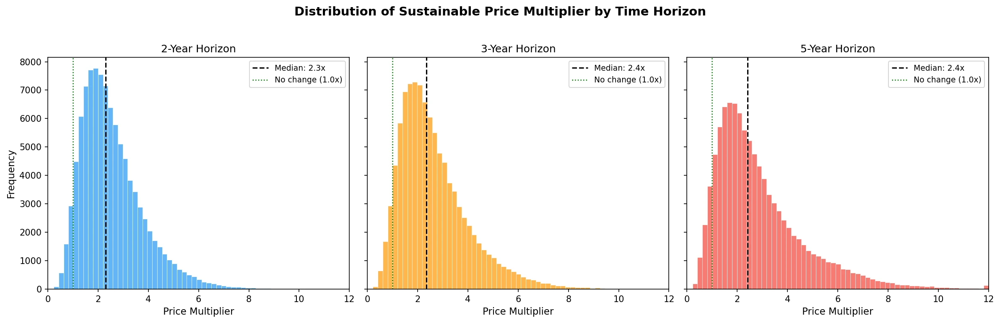
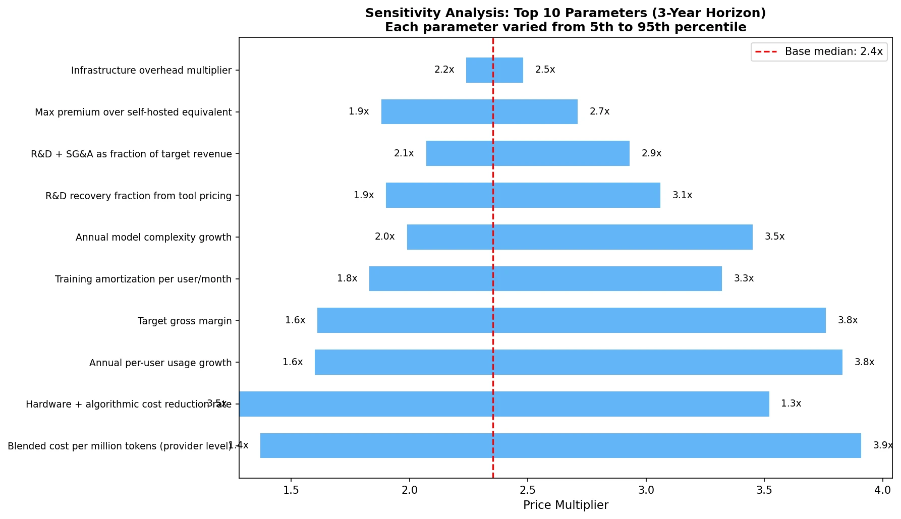

written by Roni Kobrosly on 2026-04-05 | tags: agentic ai generative ai statistics simulation economics
To be totally honest with you, I have no fucking clue what is going on with the cost of AI inference. I hear partially-informed murmurs almost every day. Is it getting cheaper because of improvements in this new field of "Inference Engineering" or in GPUs? Something about TPUs? Or are our complex reasoning models and larger context windows resulting in greater costs? Maybe the improvements and greater token throughput balances out in the end? 😅 What does it mean, precisely, when we say "AI costs are subsidized"? I don't think the government is subsidizing anything, I think "subsidize" here just means "we're giving it to you cheap to build our market share".
Behind all of the above silliness, it's a topic of immeasurable importance for a few reasons:
1) I'm almost certain that AI hype/energy is the only thing keeping the Western economy out of the toilet at the moment (Q2 2026). The supply and demand of AI token throughput is an important component of that.
2) If you're a developer, AI tools are rapidly becoming the air you breathe. Understanding what our AI subscription plans will look like in a few years matters for how you plan your career and your team's budget.
3) Every major AI provider is either pre-IPO or recently public. The moment public shareholders show up, "grow at all costs" turns into "show me the margins." That transition will be violent, and it's coming.
So I did what any self-respecting nerd does when confused: I built a Monte Carlo simulation and a unit economics waterfall. I may have gone overboard, but I forgot how fun deep research can be. Here's what I found.
Let's start from the absolute bottom: the gentle purr of a GPU in a data center, crunching numbers.
An NVIDIA H100, a workhorse of AI inference, rents for anywhere from $1.49/hour (spot pricing on Hyperbolic) to $3.90/hour (AWS on-demand). Running a 70-billion parameter model on one of these at 60% utilization gives you roughly 1,987 output tokens per second. Do the math and you get a raw cost floor of about $0.34 per million output tokens.
That's the theoretical floor. Reality is significantly worse.
Real provider-level costs for Sonnet/GPT-4o class models land around $1.50 per million output tokens. The gap (about 3-4x above the GPU floor) comes from non-negiotable things that sound boring but cost real money: multi-GPU serving for frontier models, KV cache memory overhead for large context windows, safety/RLHF filtering, API infrastructure, redundancy, and SLA guarantees.
When you blend input tokens (which are ~3-5x cheaper to process) with output tokens using a typical 60/40 split, and layer on infrastructure overhead, the provider internal cost lands around $1.09 per million tokens.
Here's where it gets interesting, because not all queries are created equal:
| Query Type | Tokens | Provider Cost |
|---|---|---|
| Autocomplete suggestion | ~550 | $0.0001 |
| Inline chat (simple) | ~1,800 | $0.001 |
| Multi-file edit | ~10,000 | $0.008 |
| Agent: bug fix | ~28,000 | $0.03 |
| Agent: feature build | ~90,000 | $0.10 |
| "Composer/refactor" session | ~230,000 | $0.34 |
Read that again. An autocomplete suggestion costs a tenth of a penny. A "Composer/refactor" session costs 34 cents. That's a 3,375x spread. This is the fact that breaks flat-rate pricing models. There's a reason Jamin Ball says pricing is one of the harder problems AI companies are tackling.
When you multiply query costs by realistic daily usage patterns across 22 working days, the monthly cost-to-serve picture emerges:
| User Type | Queries/Day | Monthly COGS | Current Price | Gross Margin |
|---|---|---|---|---|
| Light (autocomplete-focused) | ~92 | $0.87 | $10/mo | 91% |
| Moderate (chat + editing) | ~96 | $4.32 | $20/mo | 78% |
| Heavy (agentic power user) | ~77 | $21.31 | $50/mo | 57% |
Light users are wildly profitable. The $10/month GitHub Copilot Pro user doing mostly autocomplete? That's a money-printing machine for Microsoft. 91% gross margin.
Heavy agentic users, though, the ones running Claude Code or Cursor Composer to refactor entire codebases, cost $21 per month in raw compute, and that's before training amortization) and R&D. At a $50 blended price point, the margin is a tight 57%.
And this is the average heavy user. The tail is brutal. Anthropic has disclosed that some individual Claude Code Max users on the $200/month plan generate $5,000+ in compute costs. YIKES.
When you add $2/month in training cost amortization and solve for pricing that delivers a 65% gross margin while recovering 30% of R&D costs (which run about 40% of revenue for these companies), you get:
| User Type | Current Price | Sustainable Price (65% GM) | Multiplier |
|---|---|---|---|
| Light | $10/mo | $12/mo | 1.2x |
| Moderate | $20/mo | $27/mo | 1.4x |
| Heavy | $50/mo | $101/mo | 2.0x |
For light users, the correction is gentle a buck or two. For heavy users, prices need to roughly double just to hit a reasonable margin. And 65% gross margin isn't even ambitious by SaaS standards (Salesforce runs at 75%+ ).
I sanity-checked these numbers against every public data point I could find:
All three check out. ✅
The unit economics waterfall tells you what things cost now. A more interesting question is: what happens over the next few years as these companies need to actually become profitable?
This is where a single spreadsheet breaks down. There are too many moving pieces:
So I built a Monte Carlo simulation. 100,000 iterations. 16 input parameters, each with its own probability distribution calibrated against published research. Correlated via a Gaussian copula) so that, for example, faster hardware improvement correlates with faster usage growth (because cheaper inference encourages more usage). Three time horizons: 2, 3, and 5 years.
Over a 3-year horizon, AI dev tool prices need to increase by about 2.4x to be sustainable.
That's the median. A \$20/month tool becomes ~\$47/month. Not the apocalypse, but not nothing either.

The distribution is right-skewed the mean is 2.7x, pulled up by a long tail of scenarios where costs explode. The 90% confidence interval spans 1.0x to 5.4x, meaning there's a plausible world where prices stay flat and a plausible world where they quintuple.
| Outcome | Probability |
|---|---|
| Prices decrease | 5% |
| Prices increase >1.5x | 81% |
| Prices more than double | 62% |
| Prices more than triple | 32% |
| Prices more than 5x | 7% |
There is a 62% probability that AI dev tool prices more than double within 3 years. Only a 5% chance they go down. Those are not comfortable numbers if you're building a budget around $20/month Cursor subscriptions for a 50-person engineering team.
This is the most important finding and the one that gets lost in the discourse. The "average" price multiplier is kind of meaningless because the user base is wildly heterogeneous.
| User Segment | Median Multiplier | Sustainable Price | P(>2x) |
|---|---|---|---|
| Light (autocomplete) | 1.4x | $16/mo | 34% |
| Moderate (chat + editing) | 1.9x | $47/mo | 48% |
| Heavy (agentic) | 3.3x | $279/mo | 69% |
If you mostly use AI for autocomplete and simple chat, you're fine. The economics already work at current prices. Your Copilot subscription is safe.
If you're an agentic power user Composer sessions, multi-file refactors, autonomous bug-fixing agents you're looking at a 3.3x price multiplier. Your \$50/month blended cost becomes \$279/month. And there's a 69% chance it more than doubles.
This is the bimodal reality that flat-rate pricing hides. Cursor figured this out when they switched to credit-based pricing in June 2025. Windsurf moved to daily quotas in March 2026. The industry is already unwinding flat pricing because it doesn't work when usage distributions are this wide.
The sensitivity analysis shows which parameters matter most:

The top three:
Blended cost per million tokens the single biggest driver. If providers can push costs toward OpenAI's \$0.12/MTok, prices stay moderate. If costs remain at \$5-7/MTok for frontier models, prices surge.
Hardware + algorithmic cost reduction rate how fast do GPUs and inference algorithms improve? The range here is enormous: Epoch AI estimates a median of 100x/year at fixed performance, but more conservative estimates put real-world gains at 3-12x/year.
Annual per-user usage growth as developers shift from autocomplete to agentic workflows, token consumption per user explodes. This is the force that fights back against hardware improvements.
The battle between cost reduction (#2) and usage growth (#3) is the defining dynamic of AI economics right now. In most simulated scenarios, usage growth wins, which is why the median multiplier stays above 2x even with aggressive cost decline assumptions.
Here's the scenario that's actually most likely in practice: companies don't raise sticker prices. Instead, they cap usage.
If prices stay flat, the simulation suggests tools would need to deliver only about 60% of current usage to remain solvent. That means:
We're already seeing this play out. Cursor's credit system, Windsurf's daily quotas, Claude Code's 5-hour rolling windows these aren't feature decisions, they're economic necessities disguised as product design.
One force moderating the upper bound: if proprietary tools get too expensive, developers can self-host open-source models.
Running a quantized 70B model on a couple of cloud A100s costs roughly \$50-80/month all-in for a moderate user. A 7B-13B model on a single GPU can serve light autocomplete for \$15-30/month. These costs are falling with the same hardware improvements that benefit proprietary providers.
The simulation models this as a price ceiling proprietary tools can't sustainably charge more than about 2.5x the self-hosted equivalent without hemorrhaging price-sensitive users. For a moderate user, that ceiling sits around $138/month. This ceiling is why the distribution doesn't extend much past 6-8x even in pessimistic scenarios.
The catch: self-hosting requires DevOps expertise, and open-source models still lag frontier models by 6-12 months in capability. So it's a leaky ceiling, not a hard wall.
The unit economics waterfall includes a forward-looking projection that makes an interesting counterpoint to the Monte Carlo results.
With 55%/year hardware+algorithmic cost reduction (conservative per Epoch AI), 30%/year usage growth, and 15%/year model complexity growth, the net annual cost factor is 0.67x costs decline by about a third per year.
Over 3 years, that compounds to a 0.30x cost factor. Current COGS of \$23.31/month for a heavy user shrinks to \$7.10/month. At 65% gross margin, the sustainable price would be just \$31/month lower than today's pricing.
Wait, what? The waterfall says prices could decrease while the simulation says they'll probably double?
The difference is uncertainty. The waterfall uses point estimates for each parameter. The simulation uses distributions. And when you inject realistic uncertainty into growth rates, cost reduction rates, and margin targets, the right tail dominates. The median simulation outcome is higher than the waterfall point estimate because:
The waterfall and simulation agree on the direction of cost trends. They disagree on the magnitude because the simulation honestly accounts for the fat tails.
Both analyses are open source and fully reproducible. The code is available in this repository.
Unit Economics Waterfall (unit_economics.py): Deterministic, layer-by-layer cost decomposition from GPU hardware → cost per million tokens → cost per query → cost per developer-month → sustainable pricing. Cross-validated against public data from Cursor, GitHub Copilot, and Anthropic disclosures.
Monte Carlo Simulation (simulation.py): 100,000 iterations across 16 parameters with calibrated distributions (beta, lognormal, triangular, uniform). Uses a 6×6 Gaussian copula for parameter correlations, models three user segments with migration dynamics, applies an open-source price ceiling, and includes reverse migration (users downgrading when prices spike). Calibrated against known anchor points; all checks pass.
Key sources include Epoch AI inference price trends, SaaStr/Tanay Jaipuria margin analysis, WSJ/Axios/The Information company financials, Introl Blog inference unit economics, and TokenBurner/Dev.to usage tracking data. Full citations in methods.md.